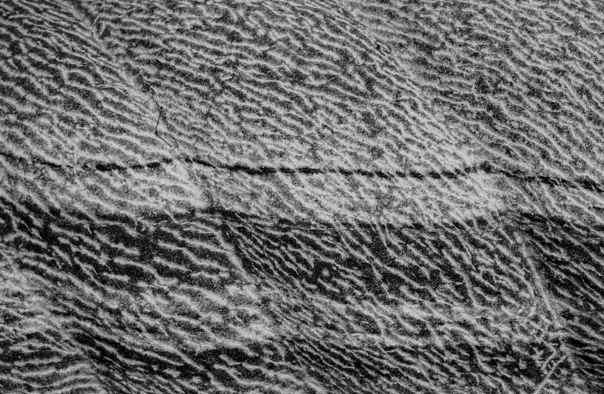

Elements
The elements of art are the stylistic aspects and the "tools" that make up the art piece.
Lines
Lines are the marks and strokes that form objects in a piece. They can be curved, straight, thick, thin, non-existent, etc. What you decide for the linework is key to definin the style of the piece.

Shape
All art pieces can be simplified into basic shapes: circles, triangles, and squares, Most art projects start with drawing the simple shapes that make up the objects. It helps with mapping out the space it takes in the image and constructing the foundation of the art.

Color
This one is self explainatory. Color is the colors that make up the piece. The way color is used in a composition is called Color Theory (see Principles)

Form
Form is the 3D simplified shapes: triangular prisms, cubes, and spheres when discussing 3D objects. Similar to shape, thinking about the 3D shapes of the objects wil help with mapping out your composition.

Space
Space refers to the 2D area that objects take up on the art piece. There are two types of space, positive and negative. Positive space is the space the object itself fills. Negative space is the areas surrounding or not filled by an object.

Texture
Texture is the visual "feeling" of an object. Whether smooth, rough, soft, it is helpful to learn how to replicate the appearance of the texture of objects. Texture also helps with defining the style of the art.
Value
Value is the use and contrast of light and dark color in the piece. Value is used to give depth of form to an image, or add to the overall value of the image. Values can gradually fade into one another, or have a sharp edge where two different values meet. Both have different applications and can add to the style of your piece.